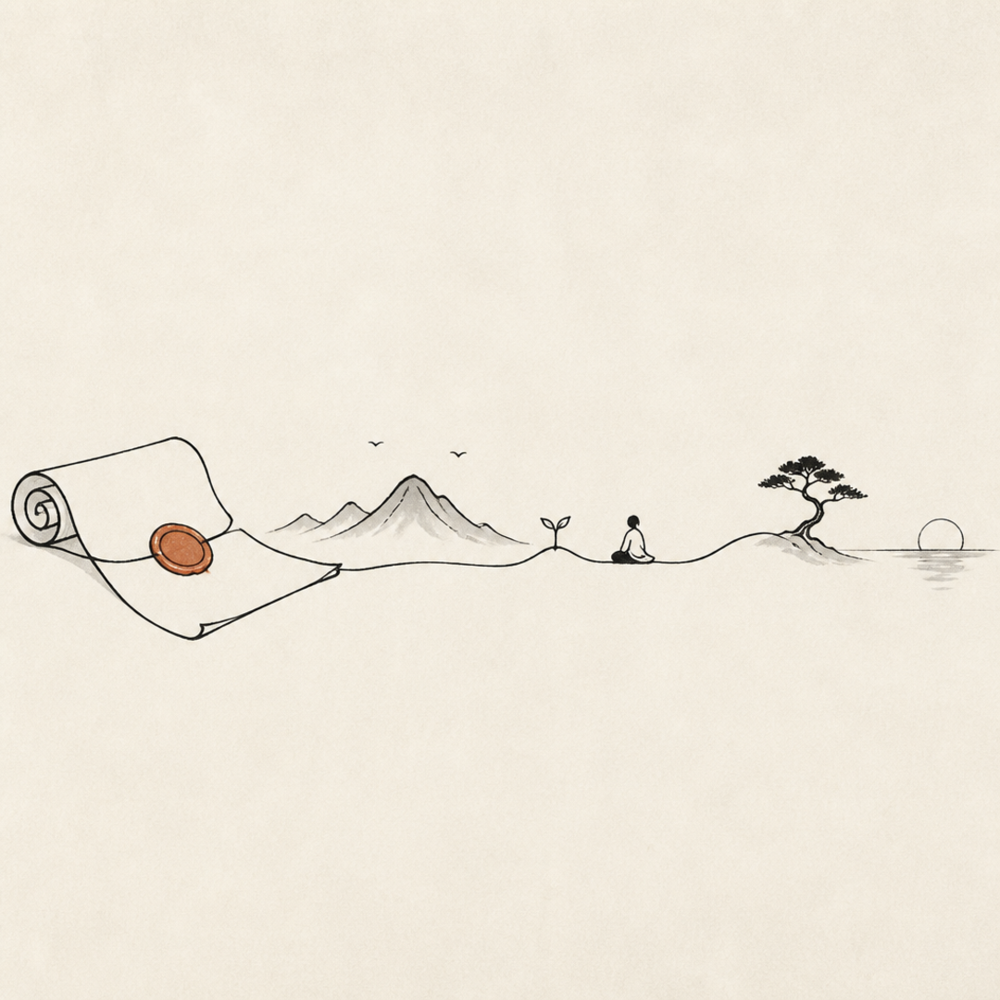

Cull · Engineering Note · 2026-06-03
Three ways to promise compatibility
How a solo, agent-driven desktop app can formulate a release & stability policy — from a one-line pledge to a fully contract-gated machine. Pick the smallest one that tells the truth.
A version number only means something once you’ve declared what your public API is — that is the part SemVer leaves to you. For Cull, the public surface is three things users and integrators build on. Each formulation below is a different ceremony for guarding those three. They are not mutually exclusive; the recommendation at the end composes them.
Cull’s public API is three surfaces — and they are not equally ready.
Database schema
user_version 21, migration chain + pre-migration backup + post-migrate invariant check. Missing: golden round-trip fixtures.
MCP token API
Roles & scopes hardened, but no version handshake and no deprecation policy. The only surface third parties build against — the real 1.0 blocker.
Export formats
Static-publish package is versioned (cull.static_publishing.v1) & validated. Generalise marker + golden test to PDF / presets / sidecar.
01 The Promise
One prose pledge, ship when ready. The least ceremony that can still be true.

What it is. A single page — COMPATIBILITY.md — that says, in plain prose: “Any library, token, or export written by version X keeps working in every later X.y.z. Breaking that requires a major bump.” You ship to main continuously; you cut a stable release by pushing a v* tag when a batch is worth distributing.
Why it fits a solo dev. Near-zero overhead and it scales with trust, not process. The guarantee lives in your head and one document, enforced by discipline and the existing full-preflight gate — not by machinery you have to maintain alone.
Modeled on: the Go 1 Compatibility Promise (go.dev/doc/go1compat) + SemVer 2.0.0. Prose guarantee, additive-only within a major.
- Overhead
- Lowest — one markdown file.
- Maturity
- single stable line (no tiers)
- Guarantees
- Backward compatibility within a major; honest, but unverified by tooling.
- Risk
- A promise you can quietly break — nothing fails the build if you do.
- Graduate when
- External integrators appear, or you break it once by accident.
02 Tiers & Gates
Each surface earns a maturity level; promotion to “stable” passes a written gate.
What it is. Every surface (and even individual MCP tools) is labelled experimental → preview → stable. Only stable carries the promise; preview can change with notice; experimental can change freely. Promotion to stable passes an explicit Release-Readiness checklist, and removing anything stable runs through a deprecation window.
Why it fits. It lets you ship a 1.0 of the app while honestly keeping the MCP API at preview — decoupling stability per surface instead of freezing everything at once. This is the formulation that unblocks 1.0 without lying about the integration layer.
Modeled on: Kubernetes alpha/beta/GA + deprecation policy, Google SRE Production-Readiness Review, HTTP Deprecation/Sunset headers (RFC 9745 / 8594).
- Overhead
- Medium — labels, a gate checklist, deprecation tracking.
- Maturity
- per-surface tiers
- Guarantees
- Differentiated & honest: strong on stable, explicit “may change” elsewhere.
- Risk
- Process can outweigh a one-person team if applied everywhere.
- Graduate when
- You have outside users on at least one surface (MCP).
03 Contracts & Modes
Each surface declares a named compatibility mode; CI golden tests fail the build if you break it.
What it is. Borrow the schema-registry vocabulary: declare a mode per surface — DB as BACKWARD_TRANSITIVE (new code reads every old DB), exports as forward-compatible “ignore unknown fields,” MCP as a versioned contract. Then make it real with golden round-trip tests and consumer-driven contract tests in CI. The promise isn’t prose — it’s “the contract suite is green.”
Why it fits an agentic workflow. Agents already produce many small, individually-verified commits; a contract suite is the gate that lets them merge fast and safely. The promise can’t silently rot, because breaking it turns CI red — exactly the kind of enforcement that survives without a human reviewer.
Modeled on: Confluent Schema-Registry compatibility modes (Avro/Protobuf), Pact consumer-driven contracts, golden/snapshot testing.
- Overhead
- Higher up front (fixtures + tests), near-zero ongoing.
- Maturity
- enforced, not asserted
- Guarantees
- Strongest — mechanically verified backward/forward compatibility.
- Risk
- Test maintenance; over-specifying a surface that’s still moving.
- Graduate when
- You adopt it incrementally — start with DB + export golden tests.
04 Side by side
The axis is ceremony vs. enforcement — not better vs. worse.
| Dimension | 01 · The Promise | 02 · Tiers & Gates | 03 · Contracts & Modes |
|---|---|---|---|
| Enforcement | Discipline | Checklist + review | CI fails the build |
| Overhead | Lowest | Medium | Front-loaded |
| Best while | Pure solo | External users / a teammate | Agent-driven, any size |
| Version math | SemVer 0.x → 1.0 | Per-surface tiers + SemVer | SemVer + named modes |
| Deprecation | Formal window | Encoded in tests | |
| 1.0 readiness gate | “It feels stable” | RRR checklist passes | Contract suite green |
| Reference | go1compat | k8s deprecation | schema-registry / pact |
05 How each handles Cull’s three surfaces
The MCP row is where the options visibly diverge — and where Cull is weakest today.
| Surface | 01 · Promise | 02 · Tiers & Gates | 03 · Contracts & Modes |
|---|---|---|---|
| DB schema | “Old DBs always open.” | Stable; migrations additive-only. | BACKWARD_TRANSITIVE + golden DB fixtures per version. |
| MCP token API | “1.0 tokens keep working.” | Keep at preview until a version handshake exists. | Adopt MCP protocolVersion + Pact-style negative tests per tool. |
| Export formats | “v1 packages stay readable.” | Stable; new fields optional + announced. | JSON-Schema per marker + must-ignore-unknown + golden serve test. |
06 Recommendation — compose, don’t choose
Start at the cheapest formulation and let evidence pull you up the ladder.
Write Option 1’s promise today — one COMPATIBILITY.md modeled on Go 1, declaring the three surfaces and the support window. Back the two ready surfaces with Option 3’s golden tests (DB round-trip + export serve) so the promise can’t silently rot. Fence MCP with Option 2’s tiers: ship a 1.0 of the app/DB/exports while MCP stays preview behind its own protocolVersion — then graduate it to stable once the handshake and a deprecation window exist.
That sequence is exactly how Go, SQLite, and Kubernetes each grew up — a prose promise first, mechanical enforcement next, formal tiers where outsiders depend on you — just scaled to one person and one agent.